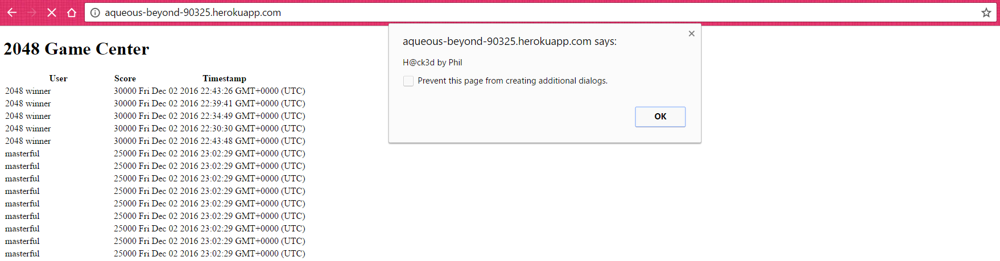
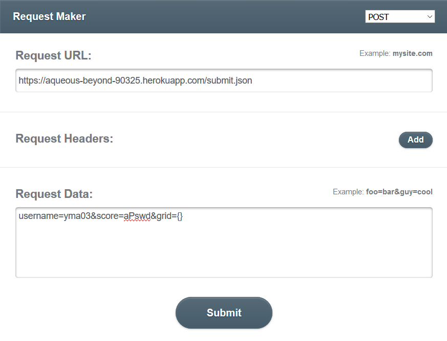
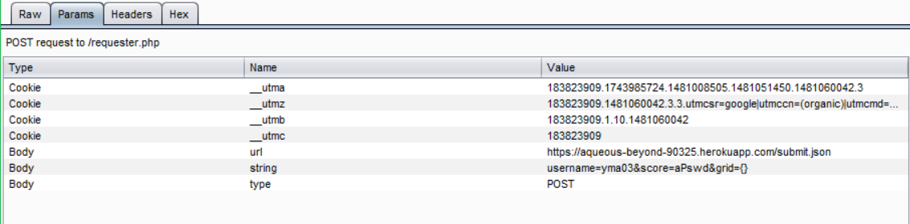
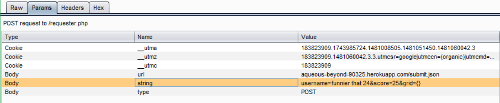
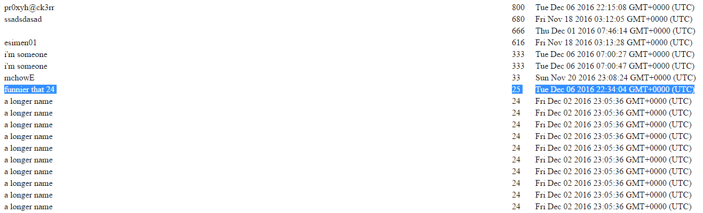

Intro:
The product analyzed is the server-side application Game Center for the game 2048 (https://aqueous-beyond-90325.herokuapp.com/), which was done for Assignment 3 and has various security and privacy vulnerabilities. I was hired as a security consultant to document and analyze the security issues in this application.
Methodology:
Analyzed the server-side source code for the application for possible vulnerabilities, then performed various attacks on the application to see if its security is compromised.
Tools used: curl, Burp suite, and a script that sends HTTP requests to his app, that is, HTML and JavaScript w/jQuery, then Chrome and Firefox.
Abstract:
For this analysis, I demonstrate and document three attacks on the application. The attacks performed are cross-site scripting (XSS), database injection, and interception of POST request data with a proxy, that is, a proxy attack. XSS and the database injection can be prevented with restriction of cross-origin request sharing (CORS), while the proxy attack cannot be. Further, XSS can be prevented by removing special characters in the part of the POST request body that will be displayed later in another GET page.
Issues Found:
- A bad programming practice of trusting any user input that is sent into the app's POST /submit.json route, which takes in username (string), score (number), and grid (JSON string). The username and score can be displayed in the response page of GET /, along with a timestamp, a Date() object automatically created within POST /submit.json, in HTML format. The score can be converted into an integer type, but the username is unchecked as it is inserted into the app's database. This allows for cross-site scripting (XSS) via sending scripts embedded in script HTML tags as usernames to POST /submit.json. XSS has high severity, as it's generally a big and common security issue, because it can be used to steal another user's login credentials or to deface a web page. The following command on a terminal is how I tested the vulnerability:
curl --data "username=<script>alert(\"H@ck3d by Phil\");</script>&score=666&grid={}" https://aqueous-beyond-90325.herokuapp.com/submit.json
The result on GET / is shown below:

As seen above, the script injected into the HTML ran when the page was loaded, thus displaying the alert() dialog. With this, I could have redirected the user to some malicious website or inserted some image in there. To prevent this attack, the app's developer should use regex to replace the special characters in the username string, like this:
user = user.replace(/[^\w\s]/gi, ''); // user is username to be put into database.
Generally, user input should never be trusted in a POST request. Plus, the developer should limit who can send the requests when enabling cross-origin request sharing (CORS) for POST /submit.json, rather than use * for CORS.
- A way to inject data into the app's database. With CORS enabled for everyone with * in POST /submit.json, someone evil can write and run a simple script that sends an object with a bogus username, score, and grid in a HTTP request to that route many many times to overload the database and prevent another user from submitting a high score to this app. This has low to moderate severity, because the user will be unable to use the app normally to submit 2048 high scores, despite not having anything stolen. Plus, as this is a Heroku app, it has a mLab MongoDB add-on, which is its database, with the basic free plan (Sandbox), so its storage capacity is limited. This allows for the database to be overloaded quite easily. I tested this vulnerability by running a script that repeatedly sends an object with username "masterful" and score 25000 (high so it can be at the top) to this app's server. Back to the screenshot above, there are the recurring entries with the same data displayed, which means that my script worked. To prevent this attack, the developer should restrict CORS by not using * in the server-side code.
- A Proxy attack can happen to all pages in this application. This has medium to high severity, as someone can use a proxy to intercept the request data going into the app and change it on the fly. For example, the Proxy hacker can change the request data to carry out XSS attacks without the app's user knowing it. I used Burp suite's proxy to intercept a POST request to /submit.json from Firefox to the application. This is how I sent a POST request from Firefox, with requestmaker.com:

Below is a screenshot of the Burp proxy before modifying the request body:

After modifying:

Result of the attack, on GET /:

This kind of attack can't really be defended, as stated in the answer to this Piazza post. Even with CORS restricted, this app is still vulnerable.
Conclusion:
Based on the documentation of the attacks on the web application presented above, restriction of CORS can prevent most attacks. However, any and all user input into a web app via request should never be trusted. This fundamental on cyber security cannot be any clearer.